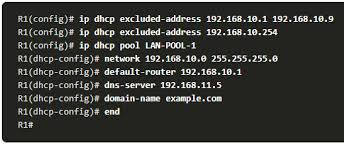
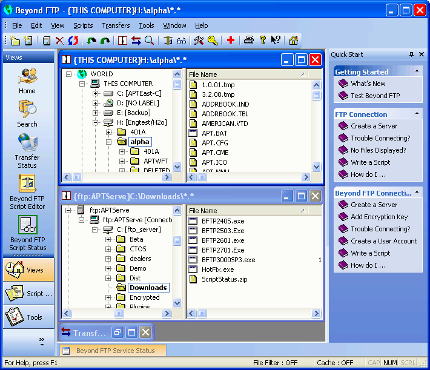
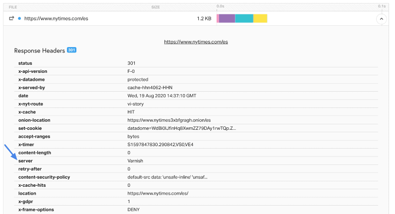

¿Qué he aprendido en este módulo?
En este módulo he aprendido a instalar y configurar servicios de red esenciales en sistemas operativos como Windows Server y Linux, comprendiendo su funcionamiento y su papel dentro de una red empresarial.
Competencias Desarrolladas
- Configuración de servicios DHCP y DNS en redes locales.
- Instalación y administración de servidores FTP y HTTP.
- Creación y gestión de usuarios y permisos en servicios compartidos.
- Monitorización de servicios y resolución de incidencias.
- Automatización básica con scripts para gestionar servicios.
- Uso de máquinas virtuales para pruebas y entornos controlados.
Herramientas Utilizadas
Windows Server
Ubuntu Server
FileZilla Server
Apache / XAMPP
Ejemplos de mis Trabajos

Configuración de un servidor DHCP en Windows Server 2019.

Servidor FTP configurado con usuarios y permisos en FileZilla.

Servidor web con Apache sirviendo una página HTML en red local.